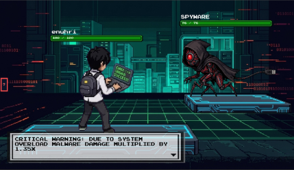

UI structure & hierarchy
Deciding screen structure, labels and navigation, then reviewing the built result against the intent.
UDM-RADAR · StudyQuest
HELLO, WORLD!
One body of work, two ways to explore it. Open the focused portfolio for my résumé, selected projects, contributions, and contact details, or enter the workstation for interactive builds, experiments, and prototypes.
Jendrick A. Coniconde
I’m a BSIT student focused on UI, front-end development, QA, and systems integration.
HOW I WORK
I begin by defining the problem, setting the scope, and deciding how the experience should work. From there, I guide implementation, review what gets built, test complete workflows, and refine the result.
Tools and capabilities linked directly to actual project evidence
Deciding screen structure, labels and navigation, then reviewing the built result against the intent.
Page structure and responsive layout in interfaces I helped direct and review.
Browser interactions in StudyQuest and the Portfolio Hub, reviewed and tested as part of implementation.
Part of UDM-RADAR’s server side; I directed the features and reviewed the implementation.
Holds UDM-RADAR’s records, using mock data only.
Used in UDM-RADAR’s stack for the advisory estimate component, which I reviewed as project leader.
Connected the Mini PCS site to Airtable records during the practical assessment.
Branches, commits and pull requests. My account has a public test change in each of UDM-RADAR and StudyQuest.
Hosted the Portfolio Hub on a Windows Azure VM with IIS during development. The move to static hosting is still planned.
Executed exploratory and workflow testing, verified defects against baseline behavior, and wrote reproducible reports with steps, expected versus actual results, severity, and evidence.
Designed positive, negative, boundary, and security test cases; prioritized release-critical coverage; and wrote five negative API tests for authentication, required fields, invalid tokens, and malformed JSON.
Writing structured prompts, reviewing what comes back, and deciding what stays.
Academic analytics and role-based review workflows using synthetic records.
Functional capstone system for predictive academic analytics and decision support.
Course creation, learning paths, assessments, and learner progress.
A gamified web platform that turns study material into structured courses.
A mobile-first production workflow connected to Airtable records.
A small production-control site connected to an Airtable database.
Fundamentals of Programming · current term
Current semester · 18 / 24 units completed · Showing 1 of 5 subjects
Fundamentals of Programming
Turn study materials into a structured course.
Alex Reyes · 3 / 5 chapters reached
Next: Functions and Parameters · Arrays and Collections
Fundamentals of Programming
Fundamentals of Programming
Production · My batches
Northstar Runner X1 · 120 units · Due 20 Nov 2026
UDM-RADAR is a functional capstone system for students, faculty and administrators to review academic records, trends and advisory projections. It uses a decision tree regressor and synthetic academic data for privacy; predictions support human review rather than making decisions.
Fundamentals of Programming · current term
Current semester · 18 / 24 units completed · Showing 1 of 5 subjects
Workflow: Students review grades, trends and estimates; faculty and administrators review academic records and support.
My work: As Project Leader, I set scope, coordinated tasks, directed the portal and analytics experience, and reviewed and tested the work.
Why it matters: The trend page separates recorded results from progress and estimates. Estimates are advisory; synthetic data protects privacy.
Testing: Role-based workflow and browser checks support the review; results apply only to the tested revision.
Takeaway: Clear labels and role-specific views support interpretation. Institutional use and real-world outcomes remain unverified.
A gamified team learning platform that turns uploaded study materials into structured courses. Learners move through chapter reviews and assessments, track their progress, and see game-inspired XP and streaks as they study.
Fundamentals of Programming
Turn study materials into a structured course.
Alex Reyes · 3 / 5 chapters reached
Next: Functions and Parameters · Arrays and Collections
Fundamentals of Programming
Fundamentals of Programming
Workflow: Learners upload study material, review chapters and complete assessments. Progression includes XP and streaks.
My work: As Lead Developer, I shaped the concept, directed the UI/UX structure, prioritized features and reviewed work with the team.
Decision: Organize chapters and assessments so learners can see where to continue.
Testing: An account-attributed change checks processing presentation and draft removal; current passing results are unverified.
Takeaway: Processing, navigation and recovery states deserve care alongside the ideal path. Learning outcomes remain unverified.
Built as a practical assessment, this production-control site helps a worker review assigned batches, see task availability and complete eligible work. It connects the workflow to Airtable; the reconstruction below uses fictional records.
Production · My batches
Northstar Runner X1 · 120 units · Due 20 Nov 2026
Workflow: A worker reviews batches and task states, starts a batch and marks eligible work done through the Airtable-connected site.
My work: I connected Airtable and guided the layout and labels for the assessment.
Decision: Show task availability clearly; prerequisites keep locked work unavailable.
Testing: Mocked checks cover task locks, record handling and Airtable pagination; they were not rerun for this portfolio.
Takeaway: Responsive layouts and clear task states support the workflow. Assessment instructions, records and configuration remain private.
Personal projects and Hub experiments.

AR garden and balance-puzzle prototype; device verification pending.
No capture yet.
View repositoryA top-down action roguelike with rooms, enemies and nine lives.
No capture yet.
View repository
Interactive gallery with Firebase/Firestore features; security and rendering work remains.
View repository

Interactive falling-sand and material simulation with reactions, discovery, presets, and autonomous entities.
Architecture and decision-graph prototype; broader domains are incomplete.
No capture yet.
View repositorySix areas where I direct, review, test, integrate, and refine project work. Select a capability to see the scope and supporting evidence.
Universidad de Manila · BSIT, 2023 – present
Information and Communications Technology, 2021 – 2023
Academic distinctions · SHS 2022–2023 and college from 2023
TESDA · Computer Systems Servicing NC II · June 2023
AWS · Foundations of Prompt Engineering (completion) · October 2026
University of Makati IT Skills Olympics 2026 (ITSO)
Python Category Participant · November 2026
I’m preparing for a 486-hour OJT placement focused on UI/UX, front-end development, QA, or related technology work.
Résumé: one page, phone-free PDF. Email is the best way to reach me.